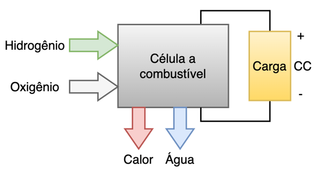
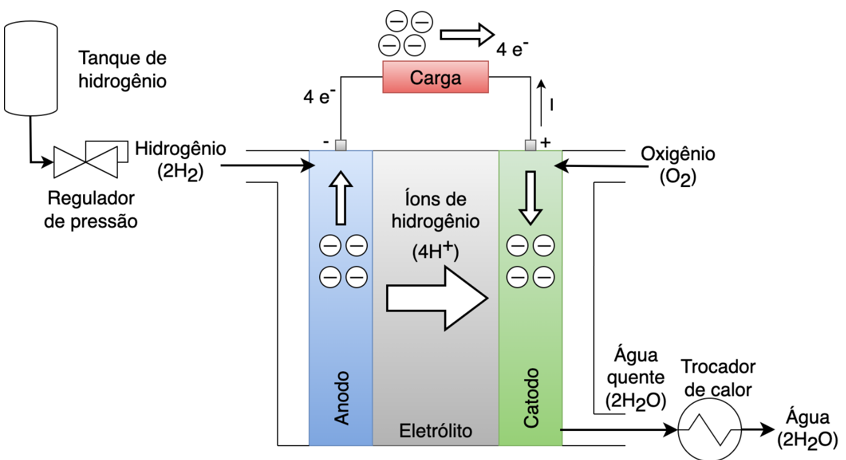
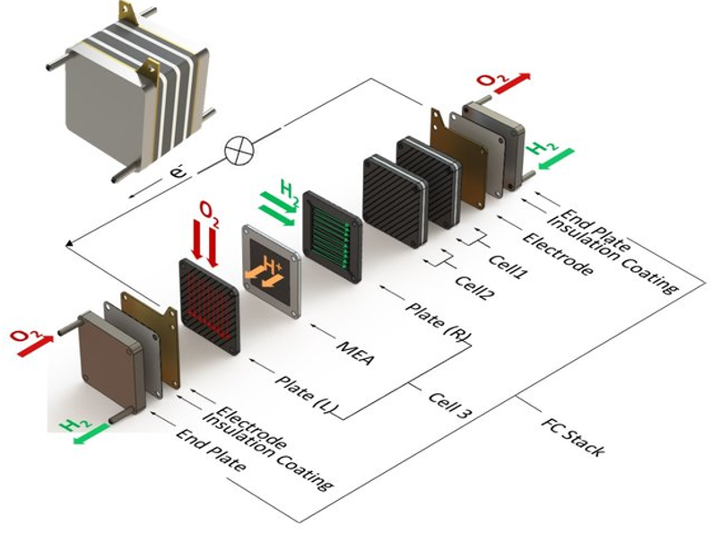
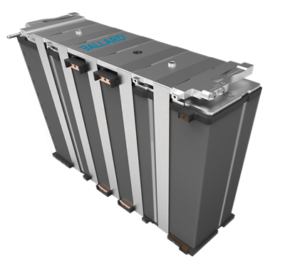
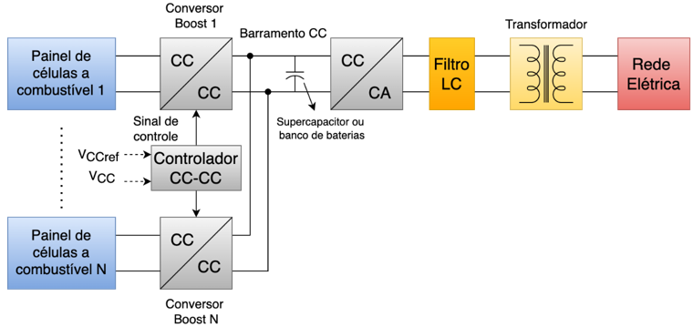
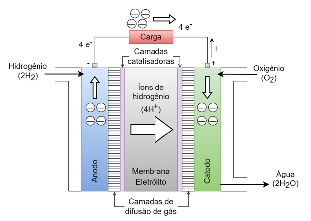
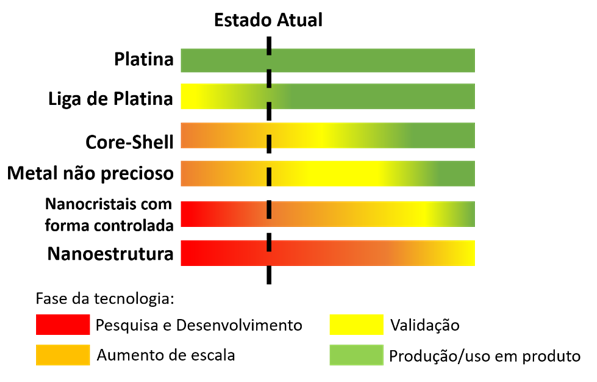

CAPÍTULO 4 CÉLULAS A COMBUSTÍVEL DE HIDROGÊNIO
Células a combustível, ou Fuel Cells (FCs), são dispositivos eletroquímicos que convertem diretamente a energia química de um combustível gasoso em eletricidade, realizando o processo inversor dos eletrolisadores. Elas são vistas como potenciais fontes de energia alternativa para aplicações estacionárias e de mobilidade.
Diferentemente de uma bateria, que armazena energia e precisa ser recarregada, a célula a combustível opera continuamente, produzindo eletricidade em corrente contínua (CC), além de água e calor, desde que o combustível (como o hidrogênio) e um oxidante (como o oxigênio, geralmente do ar atmosférico) sejam constantemente fornecidos, como mostrado na Figura 4.1.

Figura 4.1: Entradas e saídas de uma célula a combustível. Fonte: Adaptado de [19].
O princípio de operação das células a combustível, descoberto originalmente em 1839 por William R. Grove, baseia-se em uma reação eletroquímica. Os processos eletrolíticos para a geração de hidrogênio, separam a água e o hidrogênio em um eletrolisador. As células a combustível normalmente usam o processo eletrolítico inverso do eletrolisador, com diferentes tipos de eletrólito. O princípio de funcionamento de todas as células é semelhante, exceto o tipo de eletrólito [19].
Uma célula básica, como mostrado no diagrama de blocos da Figura 4.2, consiste em um eletrólito posicionado entre dois eletrodos. O eletrólito possui a propriedade especial de permitir a passagem de íons positivos (prótons), mas bloquear os elétrons. O gás hidrogênio (\(H_2\)) passa sobre o ânodo (Eletrodo de Combustível) e, com a ajuda de um catalisador (geralmente platina), separa-se em elétrons (\(e^-\)) e prótons de hidrogênio (íons positivos, \(H^+\)). Os elétrons são forçados a viajar através de um circuito elétrico externo (a carga) para chegar ao cátodo, gerando assim a corrente elétrica. Os prótons (íons) passam através do eletrólito e se combinam com os elétrons que chegam do circuito externo e com o oxigênio (geralmente do ar) para formar água (\(H_2O\)) e calor no cátodo (Eletrodo de Oxidante). Esse calor pode ser utilizado para atender as necessidades de aquecimento, incluindo água quente e aquecimento do ambiente.

Figura 4.2: Diagrama de blocos de uma célula a combustível. Fonte: Adaptado de [19].
Sistemas de células a combustível representam uma área industrial nova e promissora, recebendo considerável investimento comercial como uma futura tecnologia de energia. O desenvolvimento e o progresso dessa tecnologia devem ser observados de perto, pois as FCs complementam os motores a combustão e reduzem a dependência dos combustíveis fósseis. Essa tecnologia traz implicações ambientais significativas, pois o setor de transporte, por exemplo, é responsável por 32% da emissão global de \(CO_2\) [20]. A viabilidade, eficiência e robustez da tecnologia de células a combustível dependem criticamente do entendimento, previsão, monitoramento e controle do sistema.
As células a combustível são ativamente estudadas para diversas aplicações que podem ser separadas em:
Aplicações em Mobilidade (Automotivas): O uso em powertrains automotivos é enfatizado devido à sua importância no consumo global de combustível e na geração de emissões. O desempenho transiente é um requisito chave para o sucesso dos veículos a célula a combustível.
Geração de Energia Estacionária e Residencial (Geração Distribuída - GD): Fornecem energia limpa e eficiente para edifícios e residências, sendo atrativas devido à sua alta eficiência de conversão de combustível e baixíssimas emissões de gases poluentes.
4.1 Tipos de células a combustível
As células a combustível são classificadas principalmente pelo tipo de eletrólito que utilizam, sendo os tipos principais:
Células a combustível de eletrólito de membrana polimérica trocadora de prótons (Proton Exchange Membrane Fuel Cells ou Polymer Electrolyte Membrane Fuel Cells – PEMFC).
Células a combustível alcalinas (Alkaline Fuel Cells – AFC).
Células a combustível de troca aniônica (Anion Exchange Membrane Fuel Cells – AEMFC)
Células a combustível de óxido sólido (Solid Oxide Fuel Cells – SOFC).
Células a combustível de carbonatos fundidos (Molten Carbonate Fuel Cells – MCFC).
Células a combustível de ácido fosfórico (Phosphoric Acid Fuel Cells – PAFC).
A Tabela 4.1 apresenta as principais características dos tipos de célula a combustíveis mais comuns.
| Tipo | Sigla | Eletrólito | Faixa de Temperatura | Aplicações Comuns |
|---|---|---|---|---|
| Membrana de Eletrólito Polimérico Trocadora de Prótons | PEMFC | Polímero Sólido (p. ex., Nafion) | Baixa (50°C a 100°C) | Automotiva, residencial, portátil. |
| Alcalina | AFC | Hidróxido de Potássio Líquido | Baixa (60°C a 90°C) | Espaço (transporte inicial). |
| Membrana de Eletrólito Polimérico Condutora de Ânions | AEMFC | Polímero sólido | Baixa (60°C a 80°C) | Ainda em desenvolvimento. |
| Óxido Sólido | SOFC | Cerâmica Sólida | Alta (600°C a 1000°C) | Geração estacionária, cogeração de calor e energia. |
| Carbonato Fundido | MCFC | Carbonato Fundido | Alta (600°C a 700°C) | Geração estacionária, cogeração de calor e energia. |
| Ácido Fosfórico | PAFC | Ácido Fosfórico Líquido | Média(150°C a 220°C) | Geração estacionária, dispersa. |
4.2 A estrutura da célula a combustível e seus componentes
Uma única célula a combustível tipicamente produz uma tensão baixa de cerca de 0,4 V a 0,9 V e correntes elevadas entre 0,5 a 1,0 A/cm2. Para produzir a tensão e potência necessárias para a maioria das aplicações, múltiplas células são conectadas em série, formando um Stack, como mostrado na Figura 4.3.
Os componentes básicos de uma célula individual são:
Conjunto Membrana Eletrodo (do inglês, Membrane Electrode Assembly – MEA): Consiste na membrana (eletrólito polimérico no caso da célula PEM, por exemplo), os eletrodos (ânodo e cátodo) e as camadas de difusão de gás. O catalisador (geralmente platina na célula PEM) é aplicado à superfície do ânodo e do cátodo para acelerar a reação.
Placas bipolares (em inglês, Flow Field Plates): Distribuem os gases reagentes através de canais de fluxo, coletam a corrente produzida pela reação eletroquímica e fornecem suporte estrutural.

Figura 4.3: Esquemático da operação e componentes de um stack de célula a combustível. Fonte: [21].
A Figura 4.4 mostra um exemplo de um stack de célula a combustível comercial.

Figura 4.4: Exemplo de um stack de célula a combustível tipo PEM. Fonte: [22].
Várias células a combustível podem ser ligadas em série e paralelo para aumentar a capacidade de potência de saída, como mostra o diagrama de blocos da Figura 4.5 [23] [24]. Um inversor PWM (Pulse Width Modulation) é muitas vezes empregado para produzir uma tensão alternada (CA) fixa ou variável, com uma frequência também fixa ou variável. Normalmente, utiliza-se um transformador antes de se conectar o inversor à rede elétrica. Em um sistema híbrido de célula a combustível, outras fontes de energia, como baterias e supercapacitores, também podem ser integradas para aumentar ainda mais a eficiência e a estabilidade do sistema.

Figura 4.5: Diagrama de blocos de um sistema de células a combustível conectado à rede elétrica. Fonte: Adaptado de [19].
4.3 Células a combustível de baixa temperatura
Como apresentado na seção 4.1, as células a combustível (FCs) são comumente classificadas com base no tipo de eletrólito utilizado, o que determina suas características operacionais, como a temperatura de operação. As células podem ser divididas em dois grupos principais: células de baixa temperatura e células de alta temperatura.
As principais células a combustível de baixa temperatura são as células de eletrólito de membrana polimérica trocadora de prótons (PEMFC) e as células alcalinas (AFC). As células de membrana de troca aniônica (AEMFC) estão em desenvolvimento e tem ganhado atenção nos últimos anos. A seguir será detalhado o funcionamento de cada umas destas células.
4.3.1 Células a combustível de eletrólito de membrana polimérica de troca de prótons (PEMFC)
A PEMFC é a principal tecnologia atual entre as células de baixa temperatura devido a sua alta densidade de potência, eletrólito sólido e faixa de temperatura de operação (50°C a 100°C), sendo adequadas para aplicações automotivas e sistemas de geração distribuída de pequeno e médio porte. A baixa temperatura permite uma partida rápida, no entanto, o gerenciamento térmico é desafiador, pois a temperatura deve ser mantida abaixo de 100°C para que a membrana permaneça adequadamente umidificada. A membrana de polímero é um excelente condutor de íons de hidrogênio.
Os componentes básicos da célula a combustível PEM são o anodo, o eletrólito e catodo, como indica a Figura 4.6.

Figura 4.6: Esquemático de uma célula a combustível PEM. Fonte: Adaptado de [19].
O eletrólito é uma membrana de polímero revestido por um catalisador de metal, como a platina. O anodo tem uma placa plana com canais embutidos para dispersar o gás hidrogênio sobre a superfície do catalisador. Quando o hidrogênio pressurizado entra no anodo e em seguida passa pelo canal, o catalisador faz dois átomos do gás hidrogênio (\(2H_2\)) se oxidarem em quatro íons de hidrogênio (\(4H^+\)) e abandonarem 4 elétrons (\(4H^+\)). A reação no anodo pode ser representada pela equação química (4.1).
\[\begin{equation} 2H_2 \rightarrow 4H^+ + 4e^- \tag{4.1} \end{equation}\]
Os elétrons livres fluem pelo caminho de menor resistência da carga externa para o outro eletrodo (cátodo). A corrente de carga é causada pelo fluxo de elétrons. A direção do fluxo de corrente consiste no sentido oposto do fluxo de elétrons. Os íons de hidrogênio passam através da membrana do anodo para o catodo. Ao entrar no catodo, os elétrons reagem com o oxigênio do ar exterior e os íons de hidrogênio do catodo formando água. A reação catódica pode ser representada pela equação (4.2). Todo esse processo está representado na Figura 4.6.
\[\begin{equation} O_2 + 4H^+ + 4e^- \rightarrow 2H_2O \tag{4.2} \end{equation}\]
Portanto, a célula a combustível PEM combina hidrogênio com oxigênio para produzir água, e isso gera energia térmica no processo de reação do catodo. A energia térmica pode ser extraída por meio de um trocador de calor, como na Figura 4.2, para uso em várias aplicações. A reação geral do anodo e catodo pode ser representada pela equação química dada em (4.3).
\[\begin{equation} 2H_2 + O_2 \rightarrow 2H_2O + \text{energia (calor)} \tag{4.3} \end{equation}\]
Uma célula a combustível PEM funciona a temperaturas relativamente baixas, de cerca de 80°C, e pode variar rapidamente a sua saída para atender às mudanças na demanda de energia (com resposta a um degrau de carga em centenas de milissegundos) [23]. O dispositivo é de certa forma leve, possui alta densidade de energia e pode iniciar a operação muito rapidamente (em alguns segundos). Essa célula é adequada para muitas aplicações, incluindo o transporte e a distribuição para cargas residenciais. Por exemplo, uma célula a combustível PEM equipa o Toyota Mirai, o primeiro carro a hidrogênio a ser produzido em massa e vendido comercialmente no mundo.
Entretanto, a platina utilizada como catalisador é extremamente sensível ao monóxido de carbono, e a eliminação deste é crucial para a longevidade da célula a combustível. Isso se soma ao custo geral do sistema PEM. A execução na prática requer unidades de controle, como o regulador de pressão do hidrogênio, como ilustra a Figura 4.2, e um controle do fluxo de ar (ou de \(O_2\)).
A célula a combustível com membrana polimérica de troca de prótons (PEMFC) emprega camadas de catalisador revestidas em ambos os lados de uma membrana polimérica para catalisar as reações no catodo e no anodo, conforme Figura 4.6.
Na maioria dos projetos, o catalisador é baseado em platina, um metal precioso muito caro. A platina pode contribuir com 10% a 15% do custo de um stack de células a combustível. A menos que o teor de platina seja reduzido, ele representará uma parcela maior do custo à medida que os volumes de fabricação aumentam. Muitos pesquisadores estão se concentrando em encontrar substitutos mais baratos e duráveis para a platina, mesmo que ainda não apresentem um desempenho comparável ao da platina. Atualmente, catalisadores à base de ligas de platina (com menor teor de platina) e catalisadores não baseados em platina (utilizando metais não preciosos) são substitutos promissores. Diferentes tipos catalisadores com nanoestruturas tipo Core-shell, nanocristais e outras estão em desenvolvimento [25]. Contudo, ainda há um longo caminho a percorrer antes que eles possam ser empregados na fabricação prática e aplicações industriais, como mostrado na Figura 4.7.

Figura 4.7: Linha do tempo para tecnologia dos catalisadores de Platina, liga de Platina, core-shell, metais não preciosos, nanocristais com forma controlada e nanoestrutura. Fonte: Adaptado de [25].